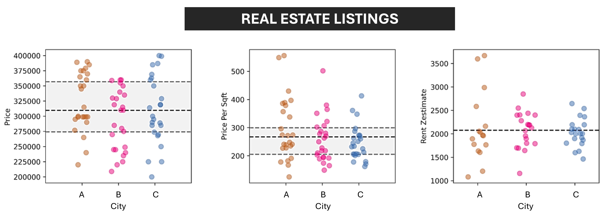

Buscando oportunidades com os dados da Zillow (EUA, setor imobiliário)
Contexto
Um investidor de imóveis deseja buscar oportunidades nos Estados Unidos (EUA) logo que elas surgem em certa localidade (a entrada é um código postal ou uma localidade). Para isso, existem diversas plataformas que anunciam imóveis para compra e venda, como é o caso da Zillow.

Essa plataforma, portanto, disponibiliza uma série de dados e informações sobre esses imóveis. No entanto, o investidor demanda de uma solução data-driven que o permita:
- Encontrar oportunidades logo que os imóveis são adicionados na plataforma Zillow.
- Buscar por imóveis em mais de um código postal (e.g., buscar oportunidades em três CEPs específicos).
- Obter os imóveis listados no site, na forma de planilhas ou em um banco de dados.
- Aplicar regras de negócio como faixa de preço, número de quartos, garagens, estimativa de aluguel, entre outros atributos, como filtros fixos durante a busca.
- Traçar cenários onde seja mais vantajoso alugar um imóvel de seu portifólio do que deixar o dinheiro em um título de renda fixa no exterior.
Nesse projeto, o método utilizado foi o CRISP-DM e a execução se deu via linguagem de programação Python, com coleta de dados realizada via Zillow API, disponível na RapidApi. Os dados são de setembro de 2023 e a solução desenvolvida se trata de um mínimo produto viável (MVP), já que se utilizou uma cota gratuita da API consumida.
Entendimento do negócio
Objetivo
Buscar de maneira dinâmica e interativa por oportunidades de imóveis recém incluídos na plataforma Zillow na localidade “Philadelphia, PA”.
Premissas
Como premissas para o projeto, tem-se:
- Os dados da plataforma são confiáveis e atualizados.
- Estimativas da plataforma quanto ao preço justo do imóvel e o preço do aluguel (em caso de comprar para alugar) são representativas.
- Pensando no item anterior, inferiu-se a qualidade da vizinhança pela nota média das escolas próximas a cada imóvel (critério de inclusão: nota maior ou igual a 4). Ou seja, se o imóvel tem escolas próximas com uma boa nota, é um indicativo de que o bairro é um bairro bom. Consequentemente, o valor estimado de aluguel está próximo da realidade (red flag validada com corretor local). Caso contrário, o bairro pode não ser bom em termos de segurança e a estimativa de aluguel informada pela Zillow estará superestimada.
- Como se trata de um MVP, a quantidade de dados é pequena, mas a solução pode ser facilmente escalonada.
Filtros de busca:
- Localidade: “Philadelphia, PA”
- Status do imóvel: à venda
- Dias na plataforma: até 7 dias
- Nota das escolas próximas: 4 ou mais
Critérios de sucesso
Encontrar oportunidades onde:
- O preço médio da área (em pés quadrados) esteja abaixo ou próximo da média global.
- O cap rate (indicador de retorno) estja acima ou próximo da média global ou a um valor de referência estabelecido pelo negócio.
- O cap rate seja maior que 7% ao ano (regra de negócio).
Entendimento dos dados
O dataset original constou de 41 linhas e 31 colunas. Algumas padronizações foram necessárias (e.g., áreas em ft² ou acres), cálculo de novas colunas como Cap Rate e razão preço/Zillow estimate (indica se o preço esta coerente, subestimado ou superestimado).
Vale ressaltar que o Cap rate é um indicador de retorno muito utilizado no setor imobiliário. Podendo ser utilizado para comparar opções de investimento, ele é tido matematicamente como:
\[\begin{equation} \textrm{Cap Rate} = \frac{\textrm{Valor anual recebido com alugel}}{\textrm{Preço do imóvel}} \end{equation}\]
Após limpeza, o conjunto de dados final consistiu em 32 linhas e 15 colunas:
| Coluna | Descrição | Tipo de dado |
|---|---|---|
zpid |
ID do imóvel no site da Zillow | string |
detailUrl |
URL do imóvel | string |
propertyType |
Tipo de propriedade | string |
address |
Endereço | string |
price |
Preço em USD | inteiro |
zestimate |
Estimativa do preço justo da Zillow (USD) | float |
rentZestimate |
Estimativa do alugel fornecido pela Zillow (USD) | float |
daysOnZillow |
Dias na plataforma | inteiro |
bedrooms |
Quartos | inteiro |
lotAreaValue |
Área do lote (ft²) | float |
lotAreaUnit |
Unidade do lote (ft² pós-padronização) | string |
bathrooms |
Banheiros | inteiro |
livingArea |
Área de referência da propriedade | float |
longitude |
Longitude | float |
latitude |
Latitude | float |
Análise/Modelagem
Com base no conjunto de dados final, pôde-se desenvolver um dashboard em Google Looker Studio. Nele, tem-se:
- A possibilidade de filtrar imóveis por quartos, banheiros,
livingAreae faixa de preço - Big numbers e valores de referência estabelecidos pelo negócio para: Preço, Preço/ft² e Cap Rate
- A segmentação por quadrantes quanto a preço/ft² e cap rate (onde se busca imóveis com preço/ft² menor que a média e um cap rate maior que a média)
- Um mapa built-in onde se pode, inclusive, obter a visão de “street view” sem sair do dashboard
- Uma tabela com detalhes de cada imóvel, contendo o URL da Zillow e opções de ordenação.
O dashboard pode ser visualizado abaixo ou acessado via Google Looker Studio (aqui).
Validação e Deploy
Após validação dos critérios e do dashboard, os dados podem ser atualizados contstantemente e de maneira escalável. Quanto aos custos, a API conta com os seguintes planos:
- Básico: 0 USD, 45 requisições/mês
- Pro: 25 USD, 13.000 requisições/mês
- Ultra: 60 USD, 45.000 requisições/mês
Além disso, o usuário final pode filtrar os imóveis e exportar o PDF com a seleção em questão.